Backend-Driven
Fintech Systems
AI-Ready Platforms
Full Stack Developer with strong backend ownership
Shipping secure APIs, financial workflows, and production systems that need to work every time.
Backend-focused engineer with 4+ years building banking and cooperative financial platforms across .NET, C#, APIs, microservices, SQL-heavy systems, and regulated integrations, with growing depth in AI, NLP, and LLM-backed solutions.
About
Building backend systems where correctness, traceability, and operational stability matter.
I am a Systems Engineer with professional experience delivering software for banking and financial cooperative environments. My strongest work sits at the backend layer: designing APIs, implementing business rules, integrating external services, optimizing data access, and supporting the reliability of production workflows used by internal operations teams.
I also work comfortably across the full stack when the product requires it, but my clearest value is as a backend-focused engineer who can translate financial business requirements into robust technical execution. That includes microservices, reporting systems, database-heavy applications, CI/CD workflows, and architecture decisions that reduce operational friction.
Senior Signals
- Owned backend logic for production systems in regulated financial environments.
- Designed integrations with external services and compliance-oriented workflows.
- Worked across legacy modernization, microservices adoption, and delivery automation.
- Balanced backend depth with enough frontend range to ship complete user-facing features.
- Pursuing deeper AI capability through a Master's Degree in Applied Artificial Intelligence.
Experience
Production delivery across banking platforms, cooperative systems, and internal operational products.
Full Stack Developer
Integrity Solutions for Banco Guayaquil
May 2025 - Present
Delivering internal banking solutions with backend-heavy responsibilities around integrations, data logic, and production change delivery.
- Implemented APIs and external service integrations for contract and approval workflows, including digital signature services.
- Optimized SQL Server logic through stored procedures, views, and backend-side performance improvements.
- Contributed to continuous enhancements for systems used across multiple business areas, with attention to reliability and operational continuity.
- Worked within Azure DevOps-based delivery workflows to support controlled releases and production deployments.
Software Developer / Project Leader
CoopMego Savings and Credit Cooperative
Dec 2021 - May 2025
Led and built systems for financial products, collections, reporting, and internal operations with strong ownership across backend design, implementation, and delivery.
- Defined technical solutions and supervised implementations while remaining hands-on in development.
- Built APIs and core backend logic in .NET for credit, collections, and operational workflows.
- Delivered advanced reporting and query optimization across SQL Server, PostgreSQL, and Sybase.
- Improved platform stability through maintenance and migration of legacy systems into more maintainable solutions.
- Implemented integrations aligned with compliance and internal automation needs, including SRI and PEP-related solutions.
- Worked with CI/CD, microservices, Docker, Jenkins, GitLab, and gRPC in agile delivery environments.
Selected Projects
Production-oriented work presented around business value, architecture, and engineering ownership.
Gestiona App
Mobile and operational platform for financial field workflows, sales execution, profile management, and route-based collection support inside a cooperative environment.
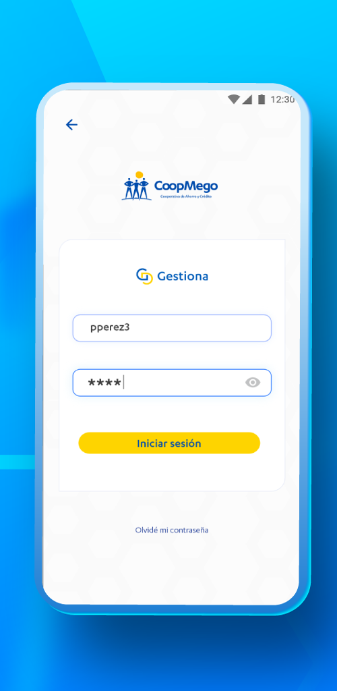
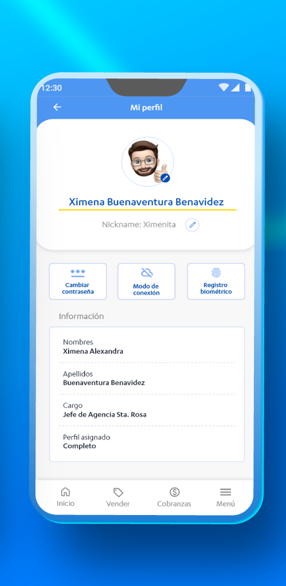
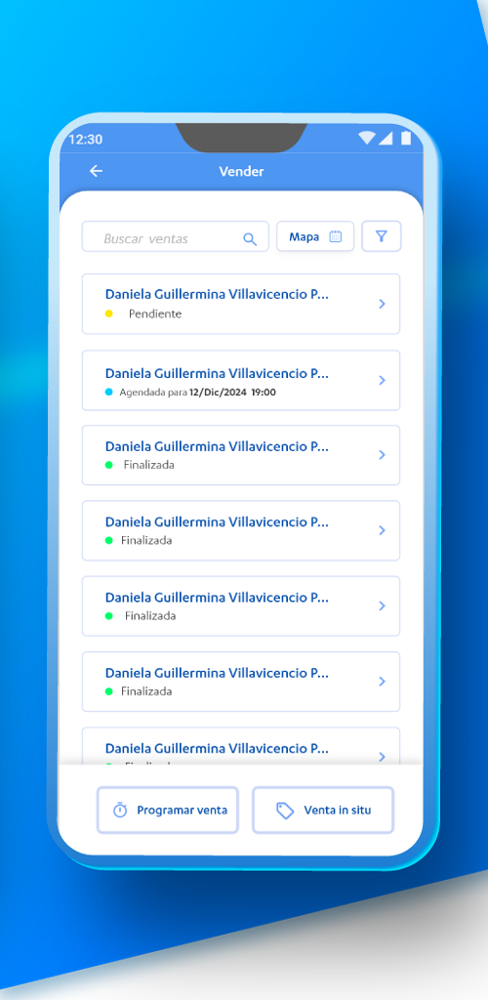
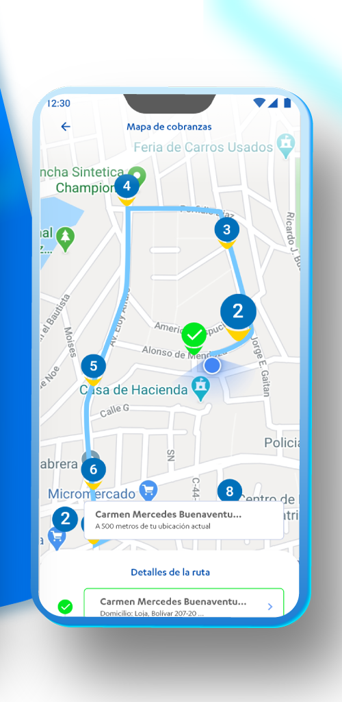
Impact
Supported real financial field operations through a mobile-first workflow that connected user actions, scheduled tasks, and collections activity in one platform. The product reduced operational fragmentation by centralizing key flows used by internal staff in day-to-day execution.
Architecture
Backend-driven application built around service-backed business logic, operational data flows, and transactional integrity. The platform combined mobile UI, backend APIs, authentication flows, profile management, scheduling, and route-aware map capabilities to support reliable execution in the field.
Role
Contributed across the stack while keeping backend concerns central: designing and implementing supporting APIs, business rules, integration points, and the application behavior required to make mobile financial workflows stable and production-ready.
Backend
.NET, C#, APIs, business logic, authentication, service integration
Frontend
Mobile UI, workflow screens, profile management, route interaction
Platform
Operational workflows, field execution support, production delivery
Loja Sostenible Web
Multi-surface web and mobile platform for sustainability content, surveys, public participation, and ODS-aligned information flows.
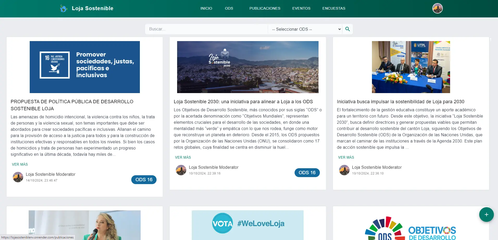
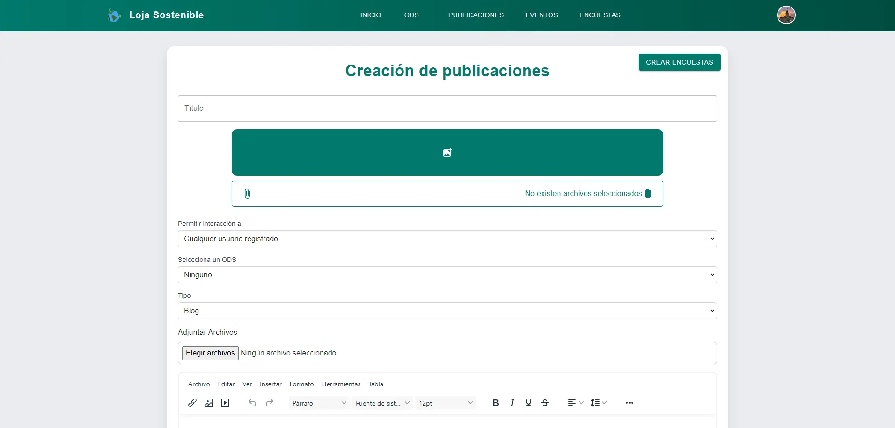
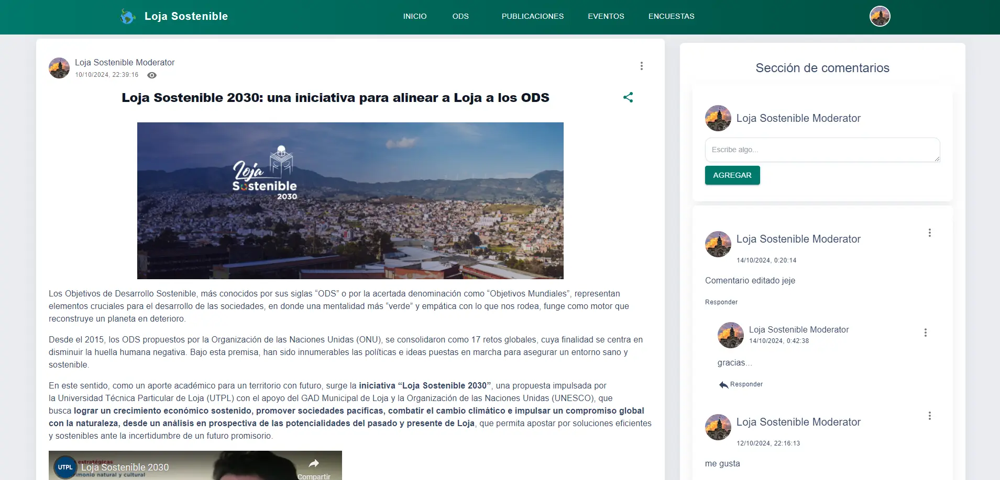
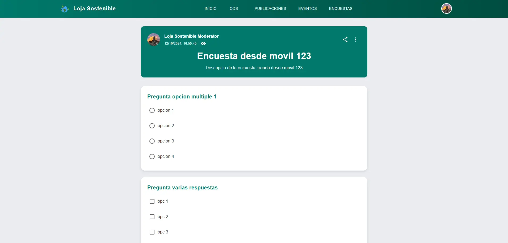
Mobile Experience
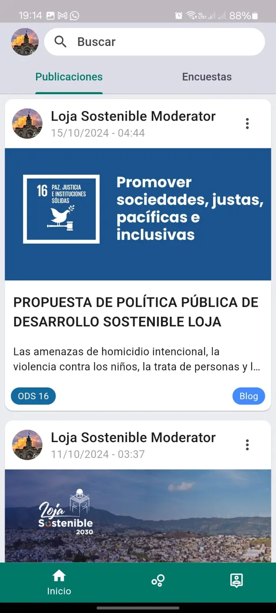
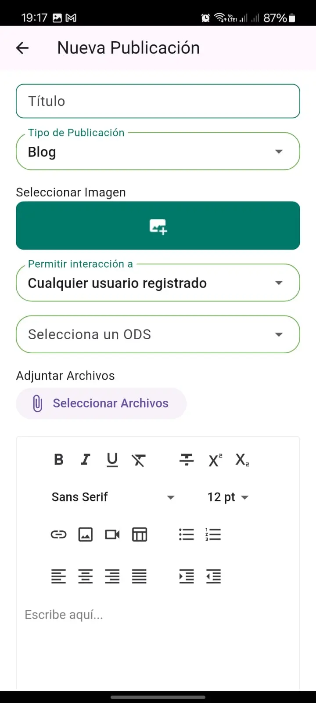
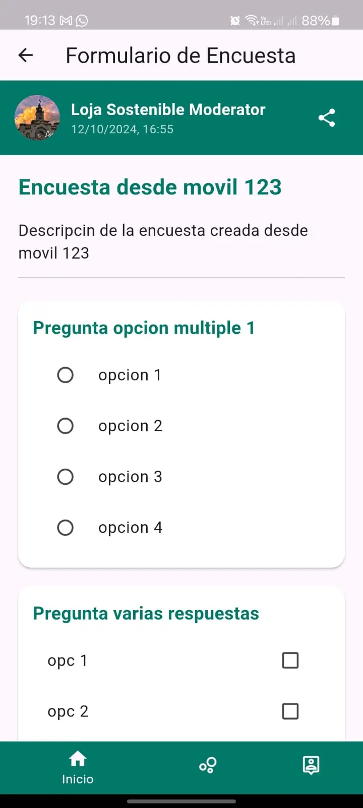
Impact
Enabled publication management, social content, surveys, ODS content discovery, and community-facing interaction flows in a single platform. The system supported both public-facing consumption and admin or moderator workflows, making it more than a simple content site.
Architecture
Full-stack platform with role-sensitive interfaces, publication and survey management, media handling, navigation across public and administrative views, and structured data flows for content retrieval and user interaction. Designed to support multiple application surfaces without losing coherence in the backend model.
Role
Built and integrated both user-facing and administrative experiences, shaping the data structures, feature flows, and application behavior necessary to support publishing, moderation, content detail views, survey workflows, and profile-level interactions.
Backend
API-backed content flows, data modeling, publication logic, survey processing
Frontend
Public feed, profile views, forms, responsive web screens, mobile experiences
Platform
Admin workflows, moderation, media-rich content, information architecture
Digital Signature Workflow Integration
Integrated digital signature providers into contract workflows for internal banking systems, improving execution reliability for compliance-sensitive approval processes.
Impact
Reduced manual friction in document execution and supported more controlled approval flows.
Architecture
External service integration, API orchestration, database-backed workflow states, internal platform connectivity.
Advanced Reporting and Query Optimization
Designed reporting and data access logic for SQL Server, PostgreSQL, and Sybase environments where operational reporting quality and performance directly affected business visibility.
Impact
Improved reporting dependability and supported faster access to operational and financial data.
Architecture
Stored procedures, views, query optimization, cross-database reporting logic, maintainable data access patterns.
AI and NLP Information Processing
Built academic and exploratory solutions using Python, NLP, and LLMs to process and analyze information with an eye toward practical backend integration.
Impact
Established a concrete path for adding intelligent services to future internal platforms and automation flows.
Architecture
Python pipelines, information extraction, prompt-driven analysis, AI-assisted processing workflows.
Technical Stack
Grouped to match how engineering leaders evaluate backend and platform candidates.
Backend
.NET
C#
ASP.NET
REST APIs
Microservices
gRPC
Authentication
Service Integration
Databases
SQL Server
Transact-SQL
PostgreSQL
Sybase
MongoDB
Stored Procedures
Views
Reporting
Frontend
React
Vue.js
Angular
Responsive Web UI
Workflow Screens
Mobile-Oriented Interfaces
DevOps & Delivery
Docker
Azure DevOps
Jenkins
GitLab
CI/CD
Production Deployments
Agile Delivery
Secure Development
AI Direction
Python
NLP
LLMs
Prompt-Based Processing
Data Analysis
Backend Integration
Strengths
Architecture Thinking
Requirement Analysis
Performance Focus
Problem Solving
Project Leadership
Reliability Mindset
Contact
Open to backend and full-stack roles where platform quality and business impact both matter.
I am especially aligned with fintech, SaaS, and engineering teams building API-first products, internal operational systems, or AI-enhanced workflows that need reliability, clarity, and backend depth.
What improves this portfolio further
- Add GitHub and live links for each project where disclosure is allowed.
- Replace placeholder screenshot paths with exported assets under
assets/projects/.... - Add real metrics such as users, modules, reports, teams served, or process time reduced.
- Include one short architecture diagram if a project can be shared publicly without risk.